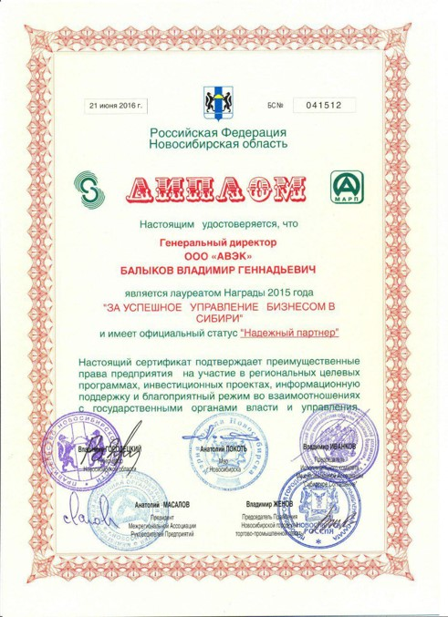
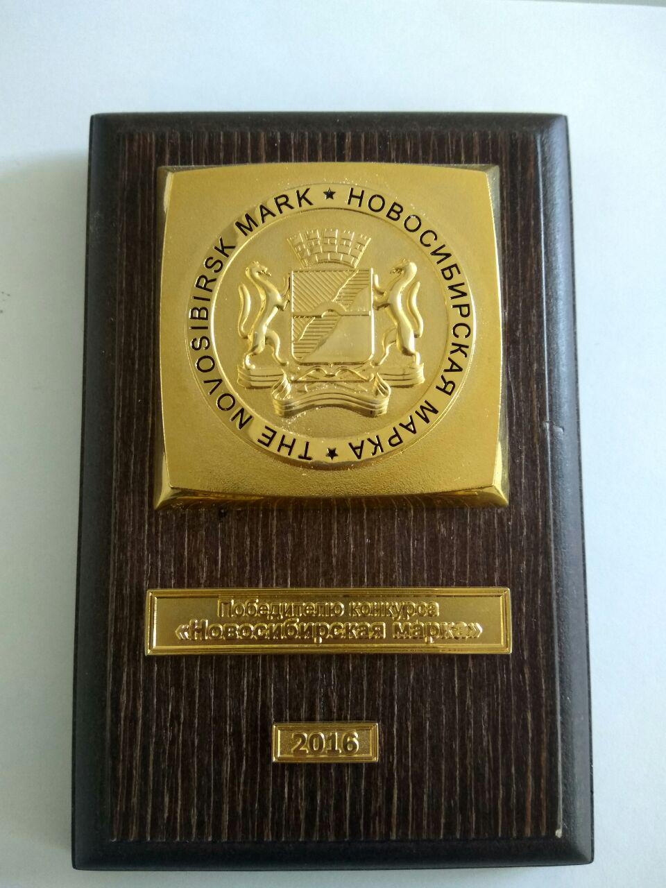

Istoria
O idee bună trebuie pusă în practică. Pentru a obține succesul, trebuie să vină împreună doi factori: ideea, timpul.
Idee
Toată lumea știe că de la ideea de inventator până la producția în masă a unui produs inovator, poate exista o distanță de câteva decenii, timp în care ideea este întruchipată într-un produs și ajunge la perfecțiune.
Ideea a apărut la sfârșitul anilor 70 ai secolului XX.
Autorul - Lev Feigin - merita să inventeze Rusia, care la acea vreme lucra în funcții de conducere în domeniul energiei electrice în industria nucleară și spațială.
Principalii autori ai invenției sunt L. Feigin, S. Levinson și P. Kosoy, care dețin un număr semnificativ de invenții și brevete în domeniul ingineriei electrice.
Timp
Timp de 20 de ani, au fost efectuate experimente pentru a testa ideea direct de către autorul acesteia.
Ideea unui normalizator de economisire a energiei a fost brevetată.
În noiembrie 2009, a fost adoptată o nouă lege federală a Federației Ruse „Cu privire la economisirea energiei și îmbunătățirea eficienței energetice”.
În noiembrie 2009, a fost înființată compania AVEK LLC, care este angajată în producția de normalizatoare de economisire a energiei ale mărcii înregistrate NORMEL.
În ultimii 30 de ani de la nașterea ideii, tehnologia pentru implementarea acesteia a fost îmbunătățită semnificativ și implementată în normalizatoarele de economisire a energiei NORMEL.
Pe termen scurt, soluția problemei economisirii energiei în Rusia vine în prim-plan. Guvernul și-a stabilit sarcina de a reduce intensitatea energetică a PIB-ului Rusiei cu cel puțin 40% până în 2020, comparativ cu 2007.
Utilizarea tehnologiei NORMEL contribuie la rezolvarea sarcinii stabilite de guvernul rus.
MANAGEMENTUL EFICIENȚEI ENERGETICE este o provocare strategică globală.
Una dintre cele mai importante condiții pentru îmbunătățirea eficienței energetice a sistemelor de energie electrică din lume este respectarea standardelor de calitate a energiei electrice.
În Rusia, problema managementului eficienței energetice este rezolvată în Programul de stat care vizează implementarea cu succes a Legii federale a Federației Ruse din 23 noiembrie 2009 N 261-FZ (modificată la 16 ianuarie 2019) „Cu privire la economisirea energiei și privind îmbunătățirea eficienței energetice și modificarea anumitor acte legislative ale Federației Ruse”, al căror scop este „...crearea unor fundații juridice, economice și organizatorice pentru stimularea economisirii energiei și creșterea eficienței energetice”.
Una dintre cele mai importante condiții pentru îmbunătățirea eficienței energetice a sistemelor de energie electrică este respectarea standardelor de calitate a energiei electrice.
În lume există standarde pentru standardele de calitate a energiei electrice, de exemplu, Standardul Interstatal (Armenia, Belarus, Kârgâzstan, Federația Rusă, Tadjikistan, Uzbekistan) GOST 32144-2013 și standardul european identic EN 50160: 2010.
Tensiunea este cel mai important parametru și în standarde este pe primul loc ca importanță. Dacă standardele nu sunt îndeplinite, nu poate fi garantată funcționarea normală a echipamentului conectat la sursa de alimentare. Într-adevăr, este foarte greu să îndeplinești standardul, pentru că schimbarea consumatorilor se produce în mod arbitrar.
Practic, cele de mai sus se aplică rețelelor electrice de 0,4 kV. peste 70% dintre consumatorii din lume sunt alimentați de aceste rețele.
În ultimii câțiva ani, lumea a promovat activ conceptul de rețele și sisteme electrice inteligente (inteligente) - rețele inteligente și sisteme inteligente, care reprezintă baza și componenta cheie a strategiilor și proiectelor de îmbunătățire a eficienței energetice a sistemelor de energie electrică. .
În țara noastră, dezvoltarea rețelelor electrice inteligente este un domeniu prioritar al „Programului de măsuri pentru a forma piețe fundamental noi și a crea condiții pentru conducerea tehnologică globală a Rusiei până în 2035 (NTI)”.
Rețele inteligente (Sisteme inteligente) reprezintă un set de măsuri tehnice și economice, inclusiv:
1. monitorizarea consumului de energie,
2. management dinamic al rețelei electrice,
3. managementul cererii din sistemul de alimentare cu energie - Demand Response,
4. Managementul pe partea cererii (DSM).
APLICAREA NORMALIZATORURILOR DE TENSIUNE VARIABILĂ NORMEL™®© PERMITĂ ÎNTREGUL COMPLEX DE REȚELE INTELIGENTE, ȘI, DE ASTEA, PERMITĂ GESTIONAREA CONSUMULUI DE ELECTRICITATE ȘI ÎMBUNĂTĂȚIREA CALITĂȚII STANDARDIZATE A ELECTRICITĂȚII.
Brevete
Diplomă pentru brevet european
către cele 28 de state ale Uniunii Europene
Patent eurasiatic pentru o invenție
„Stabilizator de tensiune AC (opțiuni)” CIS
Patent pentru o invenție a Federației Ruse
„Stabilizator de tensiune AC cu elemente de protecție și redundanță (opțiuni)”
Patent pentru o invenție a Ucrainei
Certificat de marcă comercială NORMEL
Modificare la certificatul de marcă comercială NORMEL
Patent pentru o invenție a Federației Ruse
Normalizator de tensiune AC №2618115
Certificate
Certificat de conformitate CE
Certificat de conformitate al uniunii vamale
Certificat de conformitate CE
Premii
MOSCOVA ENES EXPO 2011. Forum internațional EFICIENȚA ENERGETICĂ ȘI DEZVOLTAREA ENERGIEI
III Forum internațional de dezvoltare tehnică „TECHNOPROM-2015” - scrisoare de mulțumire
Expoziția internațională de specialitate „Crimeea. Industria construcțiilor. Economie de energie” 2015
Premiul național în domeniul antreprenoriatului „Mercurul de Aur” 2015. Diploma
Concurs „Ștampila Novosibirsk” 2015. Diploma
Câștigător al competiției „Novosibirsk Mark” 2015

Pentru managementul afacerilor de succes în Siberia 2015. Diploma
Pentru managementul afacerilor de succes în Siberia 2015. Certificat
Pentru participarea la expoziția „Locuințe și Utilități Publice -2016”. Guvernatorul regiunii Novosibirsk - o scrisoare de mulțumire
Departamentul Național de Sănătate al Departamentului Spitalului Clinic JSC „Căile Ferate Ruse” - recunoștință 2016
Concurs „Ștampila Novosibirsk” 2016. Diploma

Câștigătorul concursului „Novosibirsk Mark” 2016

Pentru managementul afacerilor de succes în Siberia 2016. Diploma
Concurs „Ștampila Novosibirsk” 2017. Diploma
Câștigătorul concursului „Novosibirsk Mark” 2017
Concurs „Ștampila Novosibirsk” 2018. Diploma
Câștigătorul concursului „Novosibirsk Mark” 2018
Pentru managementul afacerilor de succes în Siberia 2018. Diploma
Pentru dezvoltarea de succes a afacerii în Siberia 2018. Certificat
Premiul național în domeniul antreprenoriatului „Mercurul de Aur” 2019. Diploma
Concurs „Ștampila Novosibirsk” 2019. Diploma
Câștigătorul concursului „Novosibirsk Mark” 2019
Pentru managementul afacerilor de succes în Siberia 2019. Diploma

Pentru dezvoltarea de succes a afacerii în Siberia 2019. Certificat
 Moldova, Chisinau, Decebal 99 of.5
Moldova, Chisinau, Decebal 99 of.5